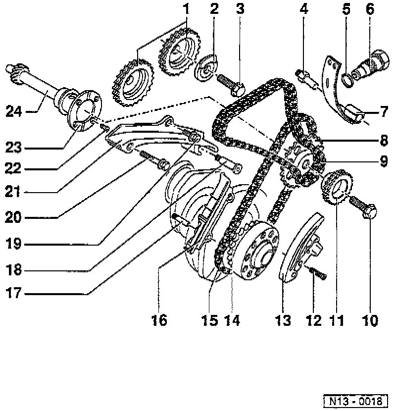

Timing Components: Diagrams

LEGEND
1 Camshaft Sprocket For Double Chain
2 Sensor Wheel
3 Camshaft Sprocket Bolt
4 Pivot Pin
5 Seal
6 Chain Tensioner For Double Chain
7 Tensioning Plate For Double Chain
8 Sprocket For Single Chain
9 Double Chain
10 Intermediate Shaft Sprocket Bolt
11 Sprocket For Double Chain
12 Tensioner Rail Bolt
13 Chain Tensioner Rail With Tensioning Plate For Single Chain
14 Crankshaft Sprocket
15 Single Chain
16 Guide Rail For Single Chain
17 Locating Pin Without Collar
18 Locating Pin Without Collar
19 Guide Rail Bolt
20 Guide Rail Bolt
21 Guide Rail For Double Chain
22 Bolt
23 Thrust Washer
24 Intermediate Shaft